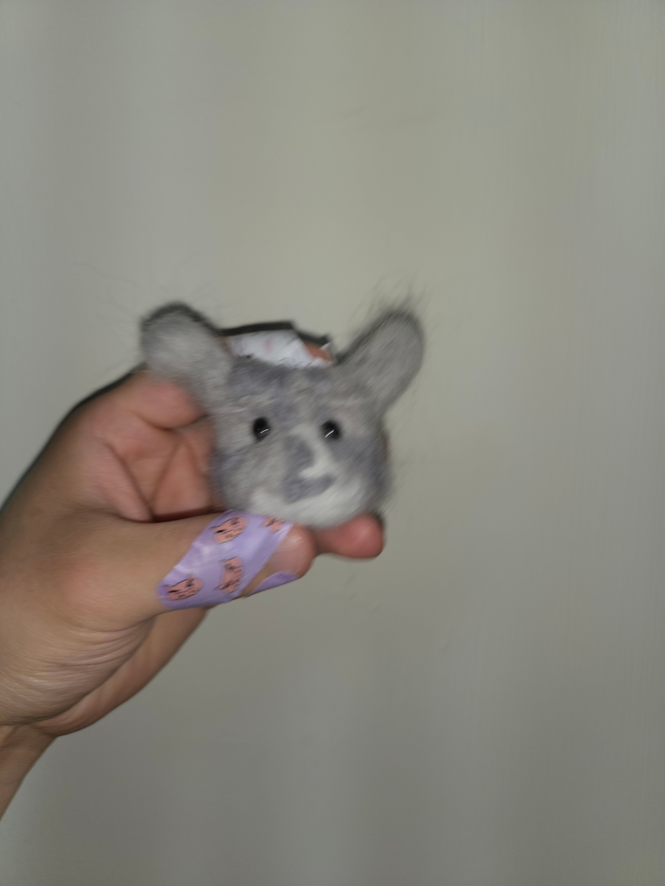
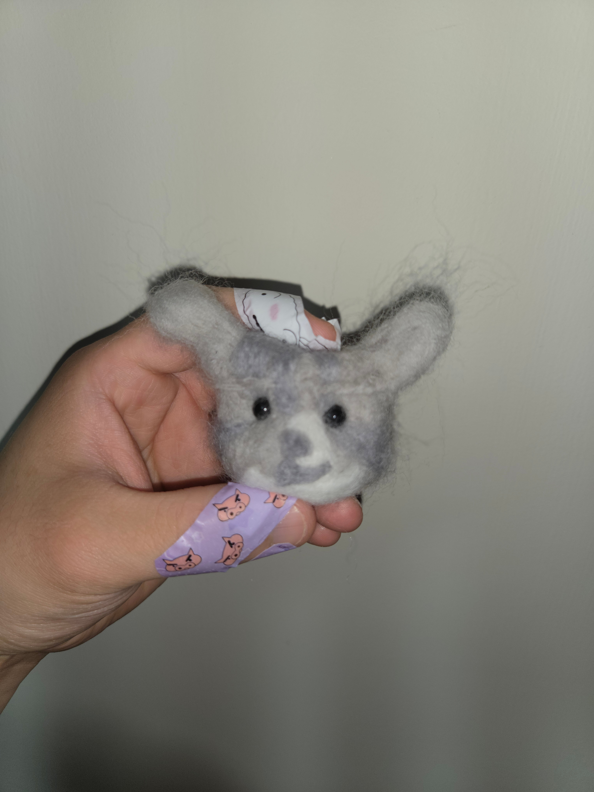
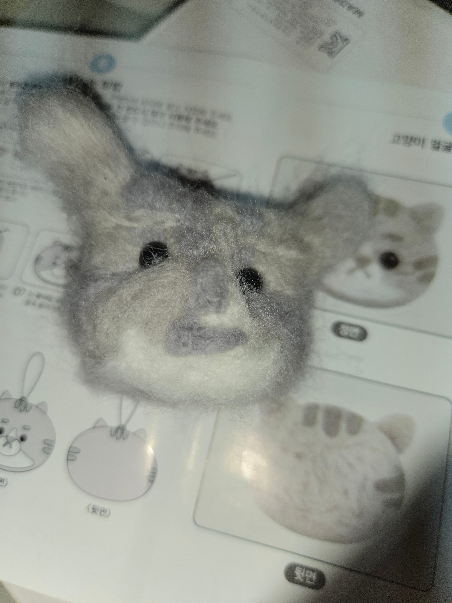
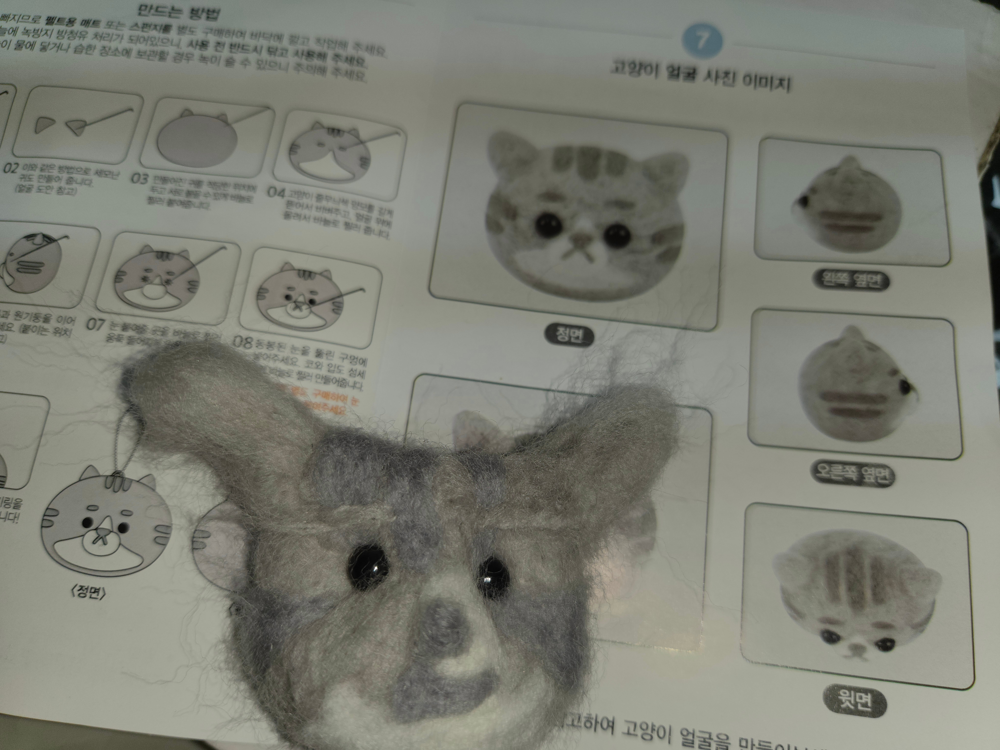

시발 저뒤에 모습 그대로 만드는 분은 장인이라 불릴만 하다 내가 인정한다




시발 저뒤에 모습 그대로 만드는 분은 장인이라 불릴만 하다 내가 인정한다
세번은 삶아야...
잘했다 프로랑 같기 힘들지
너구리냐
잘 만든 쥐 자랑하는줄 알았는데 목표가 저거였어? ㅋㅋㅋ
저거 처음부터 모양잡고 하면 안되고 대가리 원형으로 먼저 만들고 거기다 각종 부위 붙이는거임
고양이를 만들으라고 했더니 쥐를 만들어?
프레디 뭐시기에서 본거같아
인형이 아니라 진짜 쥐 목 잘라온 것 같음
머리 뚜따한줄
쥐 잘 만들었는데 싶었더니ㅋㅋㅋㅋ
손가락 ㅈㄴ쑤셨나보네 ㅋㅋㅋ
삶았냐
ㅋㅋㅋㅋ나도 처음 하다가 손가락 쑤셨었는데
모자장수가 펠트 쉽게 취급할려고 수은?으로 끓였다가 수은중독으로 미친 사람이 많아서 이상한 나라 앨리스 모자장수같은 예가 나온거라 설명하던데
좀 버려라
쥐시끼 키우는 건 줄 ㅋㅋㅋ
유전자변형이 왔네
뭔가 미국 영화에서 저거 탈 쓰고 피묻은 칼 들고 쫒아올거같은 갬성으로 사진 찍어놨네
어디가면 쥐라고 해라
나보다 잘만드네 ㅋ
나름 귀여우니 욘서~
어어 위험하다
gay
에도...워도...오니상...
큽.. 웃음을 참지 못해 미안합니다
첫 짤 AI가 말아주는 공포스러운 사진에서 본 것 같아!
쥐 만드는 줄 알았는데 고양이였네 ㅋㅋㅋㅋㅋㅋㅋ
애들아 사실 저정도 귀엽게 만든 것도 ㅈㄴ 재능충임 ㅋㅋㅋㅋㅋㅋ 저런 원형 비슷하게 만드는 것도 개어려움
괜찮게 잘만들었네 하고 내리는데 뭔ㅋㅋㅋㅋ
건조기 6번은 돌렸네
파피 플레이타임에 나와야 할것 같은 비쥬얼인데 ㅋㅋㅋㅋ
햄스터공 어찌 목 위로만 오셨소..
디지몬에 보면 귀로 날아댕기는거 있는데 그거 닮았다야
좀 버려라
한번 삶았군